Impossible to determine precedence and causality between SB characteristics and HIV incidence
Epidemiology of HIV progress over many years/decades
In this study:
Evolution of sociobehavioral characteristics of 29 countries over time
Evolution of HIV transmission dynamics over the same time period
Explore link between the two
Study only as good as data used
Ideally:
Historical data would be easy to find
Countries would have many surveys spanning many years
Our choice of 46 sociobehavioral indicators would always be present
Reality:
Historical data would be easy to find
DHS data prior to 2000 was unreliable
Countries would have many surveys spanning many years
Countries have few and irregularly timed surveys
Our choice of 46 sociobehavioral indicators would always be present
Many latent/missing values in the surveys
Many HIV indicators only started in the early 2000s
Strategy
Use only surveys from 2000 and later
Missing data
Find alternate source for indicator
Impute missing data
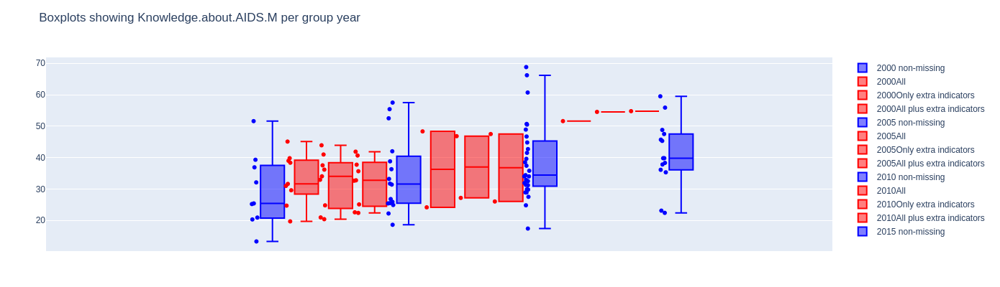
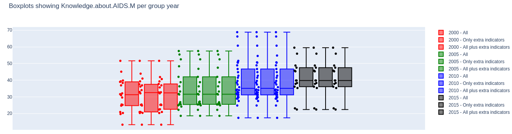
Resulting data
83 surveys from 29 countries (with each between 1 and 5 surveys between 2000-2018)
46 indicators
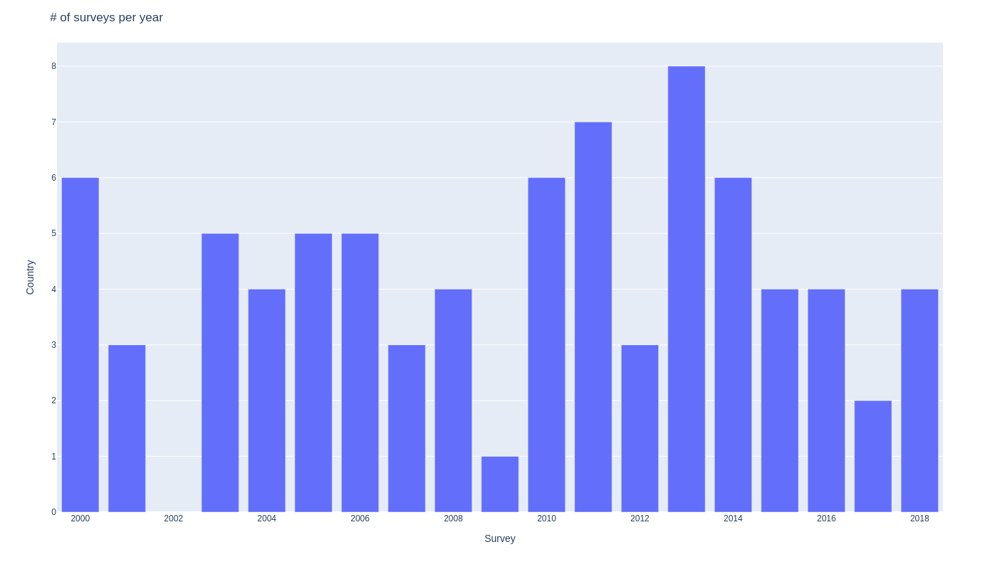
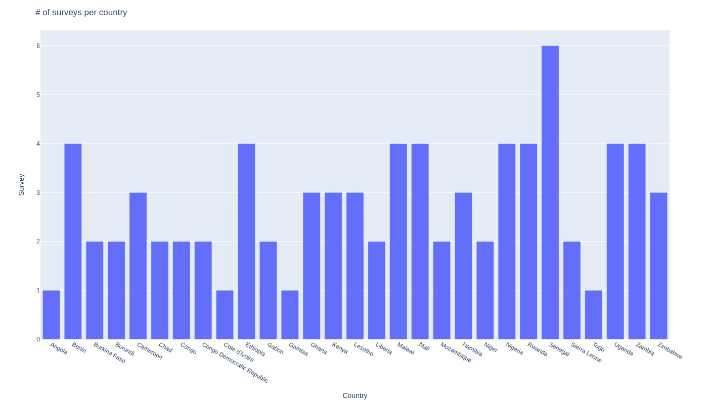
Analysis of sociobehavioral characteristics
Reduce dimensionality using Principal Component Analysis
Visualize surveys on the reduced 2 dimensional PCA space
Cluster countries using concensus clustering technique
Analysis of transmission dynamics
Individual risk of acquiring HIV given by: $\sum_{i=1}^{j} r_{i} * \rho_{i}$
And so
$$\text{New infections[n]} = \beta[n]*\frac{I[n]}{N[n]}*S[n]$$
where:
$r$ is ith exposure event
$\rho$ is the chance of that exposure event leading to infection
$S[n] = \text{number of susceptible in given year}$
$I[n] = \text{number of infected in given year}$
$N[n] = \text{total population in given year}$
$\beta[n] = r * \rho = \text{effective contact rate}$
Effective contact rate $\beta$
$$\text{New infections[n]} = \beta[n]*\frac{I[n]}{N[n]}*S[n]$$
Data from UNAIDS gives $HIV_{Incidence}$ in "per 1000" so:
$$HIV_{Incidence}[n] = \text{New infections[n]} * \frac{1000}{N[n]}$$
$$\iff HIV_{Incidence}[n] = \beta[n]\frac{I[n]}{N[n]} \frac{S[n]}{N[n]} * 1000$$
$$\beta = \frac{HIV_{Incidence}}{HIV_{Prevalence}*(1-HIV_{Prevalence})}$$
Results
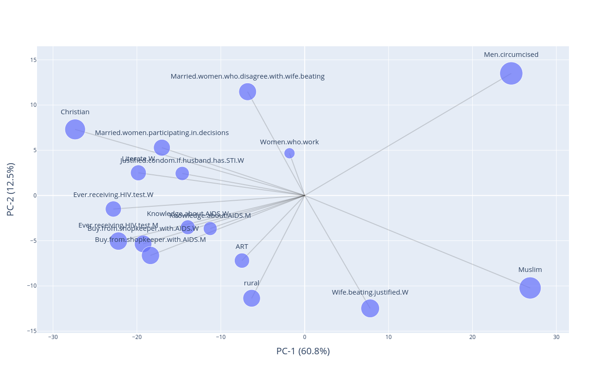
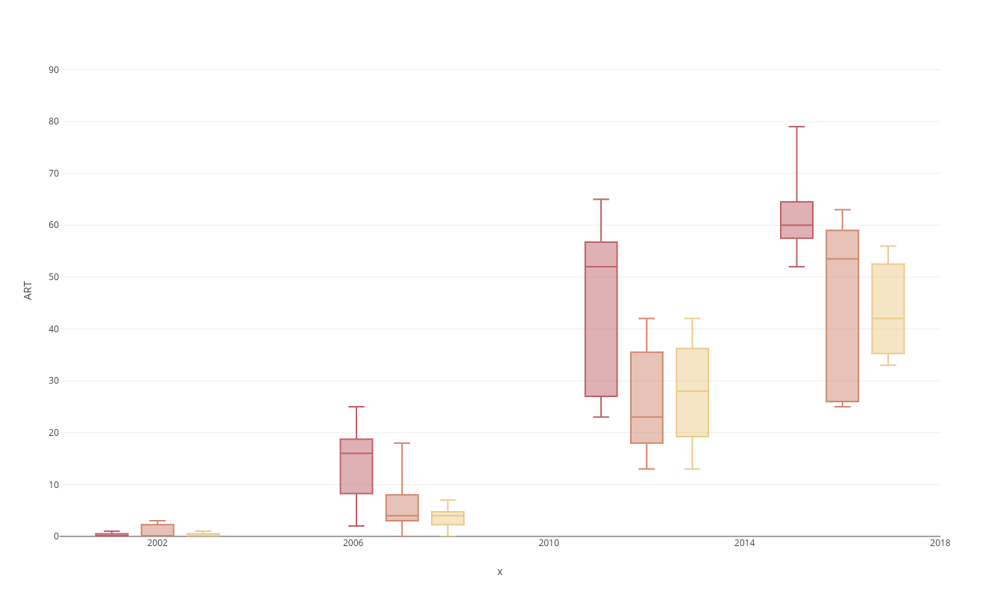
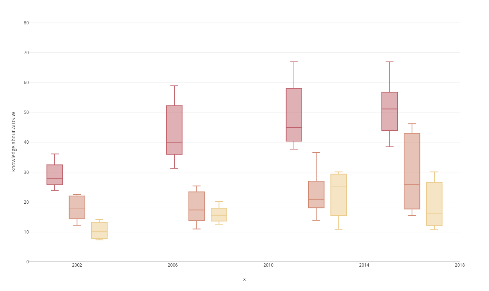
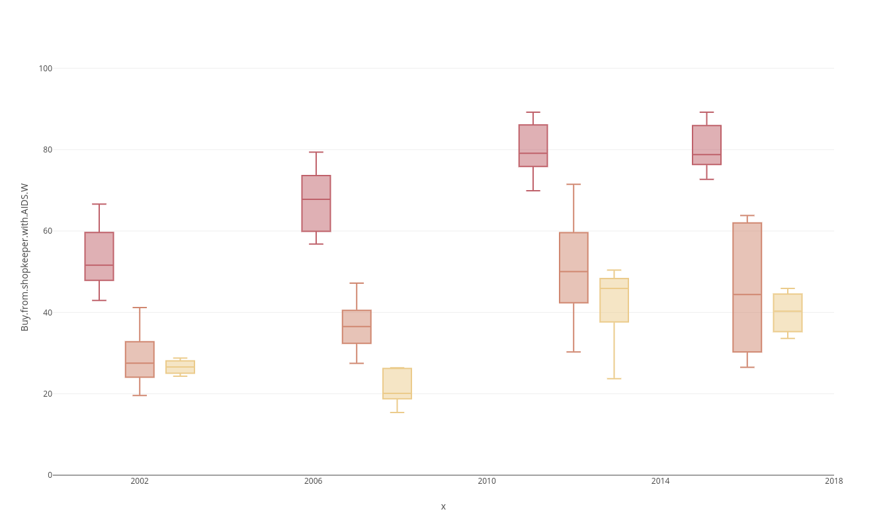
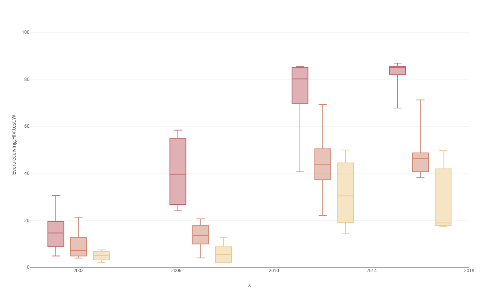
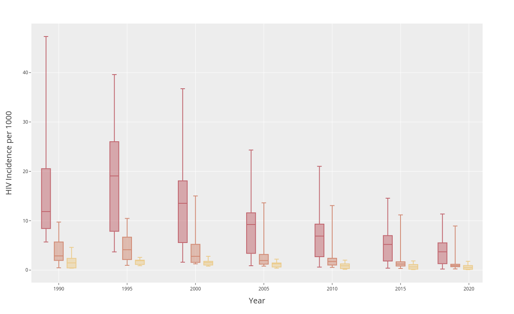
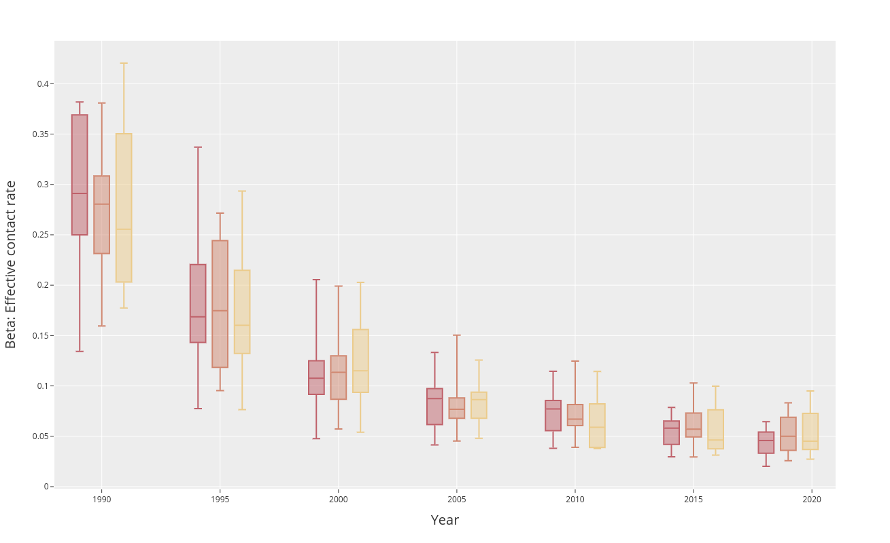
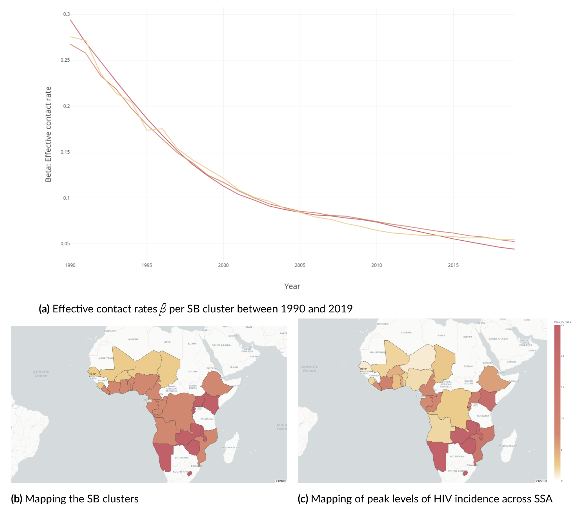
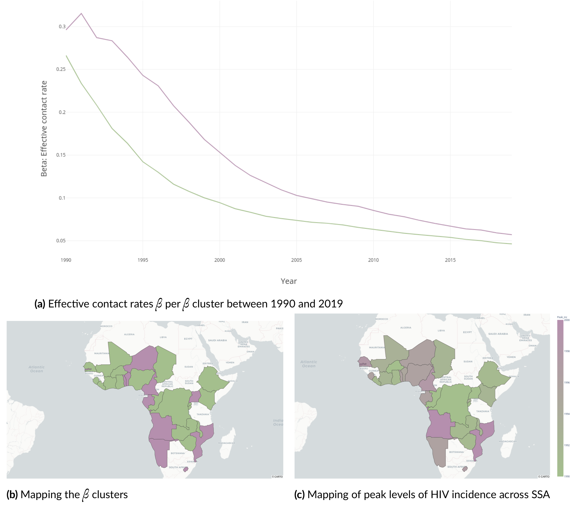
Different levels of HIV epidemics seen today unlikely to be a direct result of different evolutions of sociobehavioral characteristics
Difference in levels of HIV incidence across 3 clusters present since early 1990s
Effective contact rate evolved in a similar manner across clusters over same period
Different levels of HIV epidemics today likely to be the result of different initial conditions in nascent epidemics
Small differences in inital effective contact rate can lead to large differences over course of epidemics
Evidence for this in effective contact rate of 1990
Can be hypothesized male circumcision played a role in reducing effective contact rate in countries with high rates of male circumcision
ART coverage and HIV testing likely to bridge the gap across in HIV epidemics
Larger increase in ART coverage and HIV testing since 2005 in countries of Eastern and Southern Africa differences than countries of other 2 clusters
Resulting in faster decrease of effective contact rates of those countries
Over time, will likely lead to faster control of the epidemics in those countries
Further research
Reconstructing effective contact rate prior to 1990
Reconstructing sociobehavrioal profiles of countries prior to 2000
Limitations
Effective contact rate has the advantage of allowing comparisons across HIV epidemics but relis on both HIV incdence and HIV prevalence which may have large errors
Research has shown using a subset of sociobehavrioal indicators can produce better results
Nationally-aggregated data prone to ecological fallacy
Nationally-aggregated data prone to overlooking salience of high-risk key-populations